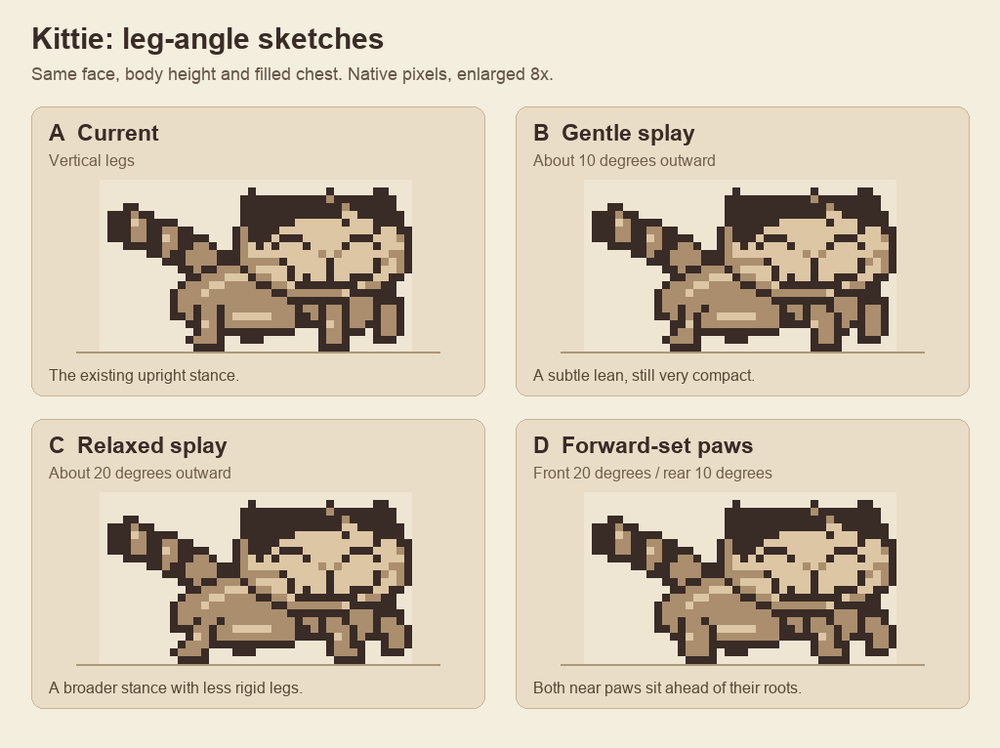
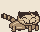
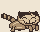
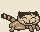
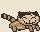

Leg-angle sketches
Four standalone options using the current sprite and original Kittie side photograph as reference. Face, body height and filled chest stay fixed. Only the legs below their attachment points change.

I prefer C for a relaxed standing pose. B is a smaller change; D could work as a stepping pose. The angles describe approximate near-leg lean from vertical. At this resolution, one or two pixels make the difference.
Native size




These are authored pixel sketches, not emulator captures. The playable sprite and game have not changed.